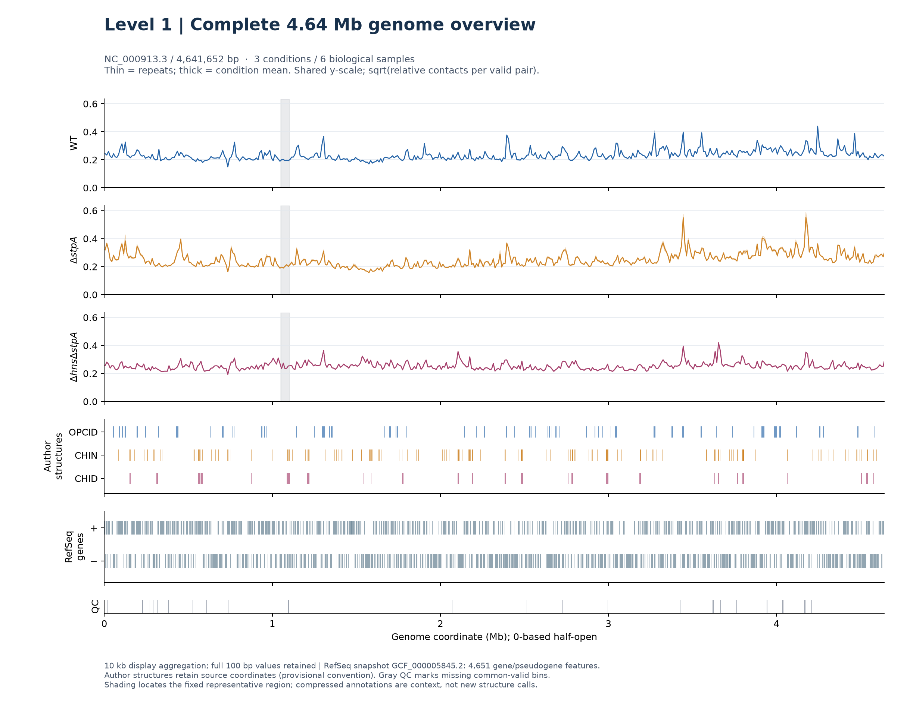
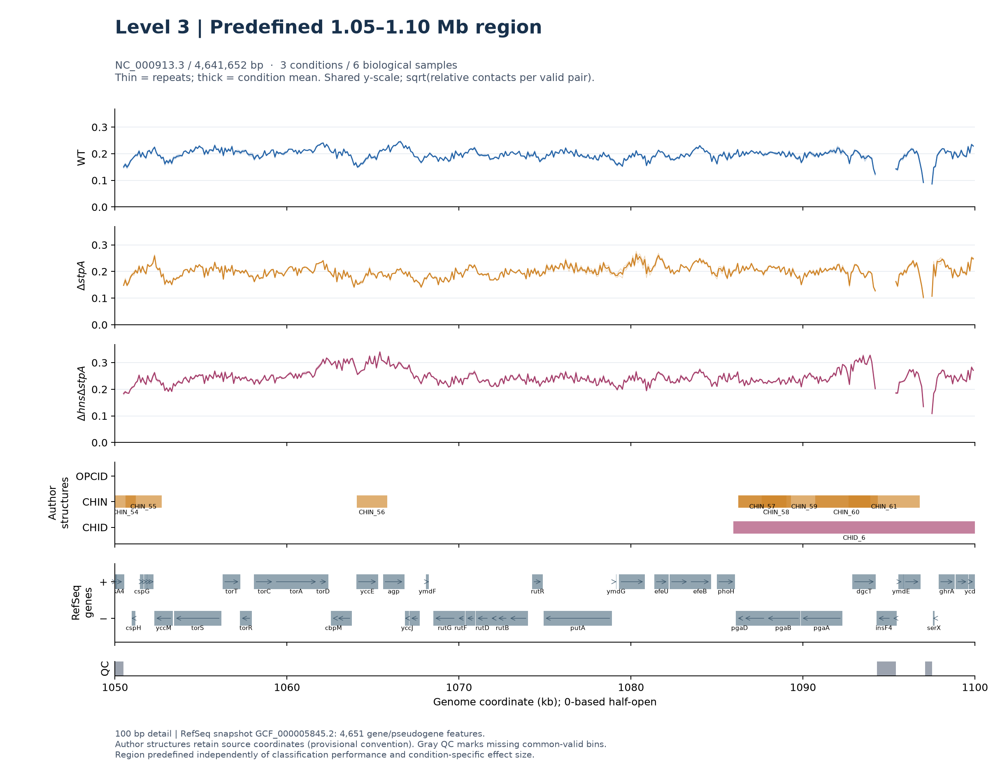

MICROCTURE / TASK 3 / DIGITAL SUPPLEMENT
全基因组多条件接触轨道
4.64 Mb · 3 conditions · 6 samples · 465 complete track pages
LEVEL 1 / WHOLE-GENOME OVERVIEW
整个4,641,652 bp染色体，同一坐标与条件量纲
10 kb显示聚合，保留100 bp数值；细线为重复、粗线为条件均值。作者结构与RefSeq正负链基因独立成轨，灰带标出固定代表区域。

LEVEL 2 / COMPLETE DIGITAL BROWSER
465页完整浏览，不以精选图替代全基因组
全部465页坐标索引
LEVEL 3 / PREDEFINED REPRESENTATIVE REGION
固定1.05–1.10 Mb：从总览进入注释细节
The representative region was predefined independently of classification performance and condition-specific effect size.
该区域沿用既有固定选择规则，没有按本轮差异或分类表现重新选位。基因箭头使用独立核验的RefSeq坐标；作者区间保留原标注及嵌套。

ANNOTATION PROVENANCE
区分参考基因、作者区间和原始绘图注释
新总览、固定区域及默认交互视图：NCBI RefSeq GCF_000005845.2 / NC_000913.3，4,651条gene/pseudogene记录；GFF由1-based闭区间明确转为0-based半开区间。提供完整固定快照、逐行比较及SHA-256来源。
作者补充表4/5/6的344结构已逐条核对原工作簿；原作者坐标的端点约定仍暂定，不把来源一致性称作生物学真值认证。补充表1的4,516行与参考存在版本、命名和区间差异，逐行保留，不自动改标或删除。
保留的465张原始PNG仍使用作者补充表基因原坐标；不是重新绘制的RefSeq版本。浏览器默认显示经过坐标转换的独立RefSeq轨。原图按页可下载，二者清楚区分。
轨道是归一化接触摘要，不是分类预测、显著性检验或基因因果作用证据。两个重复和相邻窗口不增加独立生物学样本数。